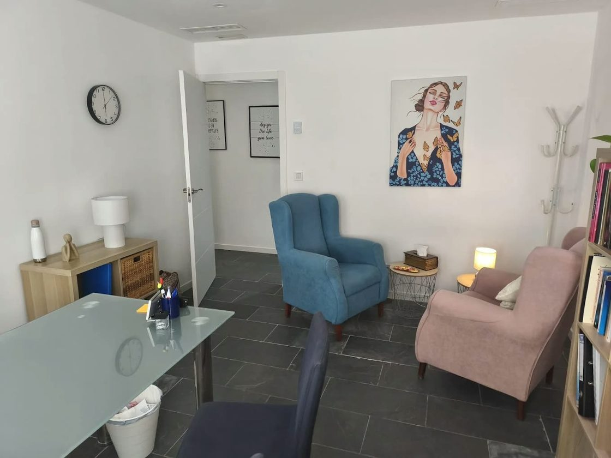

Terapia individual
Adultos y adolescentes. Un espacio propio para entender lo que te ocurre y aprender a gestionarlo.
Pedir citaPsicología clínica en Sevilla
En el Centro de Psicología Eneidas te acompañamos en tu proceso de cambio. Un equipo de psicólogas colegiadas que trabaja contigo, a tu ritmo, con herramientas contrastadas y una escucha sin juicios.

01 / 08
Servicios
Tres formatos de terapia para adaptarnos a lo que necesitas en cada momento.
Adultos y adolescentes. Un espacio propio para entender lo que te ocurre y aprender a gestionarlo.
Pedir citaSolución de conflictos, gestión de rupturas y pautas para regular comportamientos disfuncionales.
Pedir citaGestión de conflictos en el medio familiar y acompañamiento en las dinámicas de convivencia.
Pedir citaTratamientos
Elige el área que más se acerque a lo que te ocurre. Si tu situación no aparece aquí, escríbenos igualmente: te orientaremos sin compromiso.
Las adicciones se caracterizan por la dificultad para controlar el consumo de determinadas sustancias o la realización de ciertas conductas, a pesar de las consecuencias negativas que pueden generar en la vida de la persona.
Aunque inicialmente el consumo o la conducta pueden estar relacionados con la búsqueda de placer, la curiosidad o el alivio del malestar emocional, con el tiempo pueden desarrollarse patrones problemáticos que afectan al bienestar psicológico, las relaciones personales, la salud y las actividades cotidianas.
Las adicciones son problemas complejos en los que intervienen factores psicológicos, biológicos y sociales. Su desarrollo no depende únicamente de la fuerza de voluntad, y pueden requerir una intervención profesional especializada.
Tipos de adicciones
Señales de una posible adicción
En el Centro de Psicología Eneidas abordamos las conductas adictivas desde una perspectiva integradora, realizando una valoración individualizada de cada caso y trabajando los factores emocionales, cognitivos y conductuales que contribuyen al desarrollo y mantenimiento del problema. La intervención psicológica se orienta a mejorar el autocontrol, desarrollar estrategias para afrontar situaciones de riesgo, prevenir recaídas y favorecer la recuperación del bienestar personal.
En aquellos casos en los que la gravedad de la adicción requiere una atención más intensiva o especializada, orientamos a la persona hacia los recursos asistenciales más adecuados.
Pedir citaLa ansiedad es una respuesta natural de nuestro organismo ante situaciones que percibimos como amenazantes, estresantes o inciertas. En determinadas circunstancias, nos ayuda a mantenernos alerta y prepararnos para afrontar las dificultades.
Sin embargo, cuando la ansiedad es demasiado intensa, aparece con frecuencia o se mantiene en el tiempo, puede generar un malestar significativo e interferir en nuestra vida cotidiana, afectando al bienestar emocional, las relaciones personales y el desempeño de nuestras actividades habituales.
Síntomas de la ansiedad
En el Centro de Psicología Eneidas ofrecemos un tratamiento psicológico adaptado a las necesidades de cada persona, orientado a comprender qué está provocando y manteniendo la ansiedad, aprender estrategias para manejarla y recuperar progresivamente el bienestar y la calidad de vida.
Pedir citaLa autoestima es la valoración que hacemos de nosotros mismos y está relacionada con la forma en que nos percibimos, reconocemos nuestras capacidades y afrontamos nuestras dificultades. Una autoestima saludable nos permite aceptar nuestras fortalezas y limitaciones, confiar en nuestras capacidades y relacionarnos con los demás de manera más segura.
Cuando existen dificultades de autoestima, pueden aparecer sentimientos de inseguridad, dudas constantes sobre las propias capacidades, miedo al rechazo y una necesidad excesiva de aprobación por parte de los demás. Estas dificultades pueden afectar al bienestar emocional, las relaciones personales y la toma de decisiones.
Señales de baja autoestima e inseguridad
En el Centro de Psicología Eneidas trabajamos las dificultades de autoestima e inseguridad desde un enfoque psicológico integrador, ayudando a identificar y modificar las creencias negativas sobre uno mismo, desarrollar una mayor confianza personal y aprender a relacionarse de forma más saludable con los demás. El objetivo es favorecer una autoestima más equilibrada, fortalecer la autonomía personal y mejorar el bienestar emocional.
Pedir citaLa dependencia emocional se caracteriza por una necesidad excesiva de afecto, aprobación y seguridad en las relaciones personales, especialmente en las relaciones de pareja. Esta necesidad puede llevar a la persona a experimentar un miedo intenso a la pérdida de la relación, anteponer constantemente las necesidades de su pareja a las propias y tener dificultades para establecer límites saludables.
Aunque todos necesitamos afecto y conexión emocional, la dependencia se convierte en un problema cuando el bienestar personal depende en gran medida de la otra persona, generando inseguridad, sufrimiento emocional y dificultades para mantener relaciones equilibradas.
Señales de dependencia emocional
En el Centro de Psicología Eneidas abordamos la dependencia emocional desde una perspectiva integradora, trabajando la autoestima, la autonomía personal, los patrones de relación y las dificultades emocionales que pueden estar manteniendo esta dependencia. El objetivo es favorecer relaciones afectivas más saludables y equilibradas, basadas en la confianza, el respeto y el bienestar personal.
Pedir citaSentirse triste, desanimado o sin energía en determinados momentos de la vida es algo habitual. Sin embargo, cuando estas sensaciones se mantienen en el tiempo, se intensifican y comienzan a afectar a nuestra vida cotidiana, pueden estar relacionadas con un problema de depresión.
La depresión es un trastorno del estado de ánimo que puede afectar a nuestra forma de sentir, pensar y actuar, dificultando las relaciones personales, el trabajo y las actividades diarias. No se trata simplemente de estar triste, sino de un problema de salud mental que puede generar un malestar significativo y que requiere una adecuada valoración profesional.
Síntomas de la depresión
En los casos de mayor gravedad, también pueden aparecer pensamientos relacionados con la muerte o el suicidio.
En el Centro de Psicología Eneidas ofrecemos un tratamiento psicológico individualizado, orientado a comprender los factores que están influyendo en el estado de ánimo, modificar los patrones de pensamiento y comportamiento que mantienen el malestar y favorecer la recuperación del bienestar emocional y la calidad de vida.
Pedir citaEl duelo es un proceso natural de adaptación emocional que experimentamos ante la pérdida de una persona querida o de algo significativo en nuestra vida. Aunque habitualmente lo asociamos al fallecimiento de un ser querido, también puede aparecer ante una ruptura de pareja, la pérdida de un trabajo, cambios importantes en nuestra salud u otras situaciones que suponen una transformación significativa en nuestra vida.
Cada persona vive el duelo de manera diferente, dependiendo de sus circunstancias, del vínculo con aquello que ha perdido y de sus recursos personales. No existe una única forma de afrontarlo ni un tiempo determinado para superarlo.
Manifestaciones habituales del duelo
Aunque el duelo es una respuesta natural y no constituye por sí mismo un trastorno psicológico, en ocasiones el sufrimiento puede resultar especialmente intenso, prolongarse en el tiempo o dificultar significativamente la vida cotidiana.
En el Centro de Psicología Eneidas ofrecemos acompañamiento psicológico durante los procesos de duelo, proporcionando un espacio seguro en el que expresar y comprender las emociones asociadas a la pérdida. Nuestro objetivo es ayudar a la persona a elaborar lo ocurrido, adaptarse a los cambios y recuperar progresivamente su bienestar emocional, integrando la pérdida en su historia personal sin necesidad de olvidar aquello que ha sido importante en su vida.
Pedir citaLas habilidades sociales son un conjunto de capacidades que nos permiten relacionarnos con los demás, expresar nuestras emociones, opiniones y necesidades, establecer límites y afrontar diferentes situaciones sociales de manera adecuada.
Aunque relacionarnos con otras personas forma parte de nuestra vida cotidiana, no siempre resulta sencillo. En ocasiones, la inseguridad, el miedo al rechazo, las dificultades para comunicarnos o la falta de determinadas habilidades pueden generar malestar y afectar a nuestras relaciones personales, familiares, sociales o laborales.
Las habilidades sociales pueden aprenderse y desarrollarse a lo largo de la vida, favoreciendo una comunicación más segura, una mayor confianza personal y relaciones más satisfactorias.
Manifestaciones habituales de las dificultades en habilidades sociales
En el Centro de Psicología Eneidas trabajamos el desarrollo de las habilidades sociales desde un enfoque psicológico integrador, ayudando a identificar las dificultades que interfieren en las relaciones personales y a desarrollar estrategias de comunicación, asertividad y resolución de conflictos. El objetivo es favorecer una mayor seguridad y confianza en las interacciones sociales, mejorar la capacidad para expresar las propias necesidades y construir relaciones más saludables y satisfactorias.
Pedir citaLa hipocondría, también conocida como ansiedad por la salud, se caracteriza por una preocupación excesiva y persistente por padecer o desarrollar una enfermedad grave. Esta preocupación puede mantenerse incluso cuando las exploraciones médicas no muestran alteraciones que la justifiquen, generando un malestar emocional significativo que afecta a la vida cotidiana.
Por otro lado, los síntomas psicosomáticos reflejan la estrecha relación que existe entre nuestro bienestar psicológico y físico. El estrés, la ansiedad y otras dificultades emocionales pueden influir en la aparición, intensidad o mantenimiento de determinadas molestias físicas, como dolores musculares, problemas digestivos, cefaleas o sensación de fatiga.
Estas molestias son reales y pueden generar un sufrimiento significativo, aunque los factores psicológicos contribuyan a su aparición o mantenimiento.
Manifestaciones habituales
En el Centro de Psicología Eneidas abordamos estas dificultades desde una perspectiva integradora, ayudando a comprender la relación entre los pensamientos, las emociones y las sensaciones físicas. La intervención psicológica se orienta a reducir la preocupación excesiva por la salud, modificar los patrones de interpretación y comprobación que mantienen la ansiedad y desarrollar estrategias para gestionar el malestar emocional y físico, favoreciendo una mejor calidad de vida.
Pedir citaLa ira es una emoción natural que aparece cuando percibimos situaciones de injusticia, frustración, amenaza o cuando sentimos que nuestras necesidades no están siendo respetadas. Al igual que otras emociones, cumple una función adaptativa y no constituye un problema en sí misma.
Sin embargo, cuando la ira se experimenta de forma muy intensa o frecuente, o existen dificultades para regular las reacciones que provoca, puede generar malestar emocional, conflictos en las relaciones personales y consecuencias negativas en diferentes ámbitos de la vida.
Las dificultades en el control de impulsos pueden llevar a actuar de manera precipitada, sin valorar suficientemente las consecuencias de nuestras acciones, especialmente en situaciones de elevada intensidad emocional.
Manifestaciones habituales
En el Centro de Psicología Eneidas trabajamos las dificultades relacionadas con la ira y el control de impulsos desde un enfoque psicológico integrador, ayudando a identificar las situaciones y los factores que desencadenan y mantienen estas respuestas, desarrollar estrategias de regulación emocional y mejorar la capacidad para afrontar los conflictos de manera más reflexiva y adaptativa. El objetivo no es eliminar la ira, sino aprender a gestionarla y expresar las emociones de una forma saludable, favoreciendo el autocontrol y las relaciones personales.
Pedir citaEl mindfulness, también conocido como atención plena, es una práctica que consiste en prestar atención de manera consciente al momento presente, observando nuestros pensamientos, emociones y sensaciones físicas con una actitud de apertura y sin juzgarlos.
En nuestra vida cotidiana es habitual que nuestra atención se centre en preocupaciones sobre el futuro, experiencias del pasado o pensamientos que aparecen de manera automática. La práctica del mindfulness nos ayuda a tomar conciencia de estos procesos y a relacionarnos con nuestras experiencias de una forma más flexible y equilibrada.
Lejos de intentar dejar la mente en blanco o eliminar las emociones desagradables, el mindfulness nos enseña a reconocer lo que estamos experimentando, favoreciendo una mayor conciencia emocional y una respuesta más consciente ante las dificultades.
Beneficios de la práctica del mindfulness
En el Centro de Psicología Eneidas incorporamos técnicas de mindfulness dentro de un enfoque terapéutico integrador, cuando resultan adecuadas para las necesidades de cada persona. Su práctica puede complementar el tratamiento de diferentes dificultades emocionales, ayudando a desarrollar una mayor conciencia de los pensamientos y emociones, mejorar la regulación emocional y favorecer el bienestar psicológico.
Pedir citaLos pensamientos obsesivos son ideas, imágenes o impulsos mentales que aparecen de forma repetitiva e involuntaria y que pueden generar ansiedad, miedo o un malestar emocional significativo. En muchas ocasiones, la persona los experimenta como pensamientos no deseados, difíciles de controlar y contrarios a sus propios valores o deseos.
Aunque todos podemos experimentar pensamientos intrusivos en determinados momentos, estos pueden convertirse en un problema cuando aparecen con frecuencia, generan un malestar intenso o interfieren en nuestra vida cotidiana.
En ocasiones, la persona intenta neutralizarlos mediante comprobaciones, búsqueda constante de seguridad, repetición de determinadas conductas o esfuerzos por evitar aquello que le genera ansiedad. Estas estrategias pueden proporcionar un alivio momentáneo, pero también contribuir a mantener el problema.
Manifestaciones habituales
En el Centro de Psicología Eneidas abordamos los pensamientos obsesivos desde una perspectiva integradora, utilizando estrategias psicológicas adaptadas a las necesidades de cada persona. La intervención se orienta a comprender los mecanismos que mantienen estos pensamientos, reducir las conductas de evitación y comprobación y desarrollar una mayor tolerancia a la incertidumbre. El objetivo es disminuir el malestar emocional y conseguir que estos pensamientos dejen de interferir significativamente en la vida cotidiana.
Pedir citaLa sospecha o el diagnóstico de un cáncer genera ansiedad, miedo y un gran número de preocupaciones, tanto en la persona que lo vive como en su familia. Contar con apoyo y tratamiento psicológico desde el primer momento es fundamental en todas las fases del proceso.
Pedir citaLa personalidad está formada por un conjunto de características, pensamientos, emociones y formas de comportamiento que influyen en cómo nos percibimos a nosotros mismos, nos relacionamos con los demás y afrontamos las diferentes situaciones de la vida.
Los trastornos de personalidad se caracterizan por patrones persistentes y poco flexibles de pensamiento, comportamiento y relación con los demás que pueden generar un malestar significativo o dificultades en diferentes ámbitos de la vida, como las relaciones personales, familiares, sociales o laborales.
Estos patrones pueden manifestarse de distintas maneras y con diferente intensidad, dependiendo de las características de cada persona y del tipo de trastorno.
Manifestaciones habituales
En el Centro de Psicología Eneidas abordamos los trastornos de personalidad desde una perspectiva integradora, adaptando la intervención psicológica a las características y necesidades de cada persona. El tratamiento se orienta a identificar y modificar los patrones de pensamiento, emocionales y conductuales que generan dificultades, favorecer la regulación emocional, mejorar las relaciones interpersonales y desarrollar estrategias de afrontamiento más adaptativas. El objetivo es promover un mayor bienestar psicológico, autonomía personal y calidad de vida.
Pedir citaEl trauma psicológico puede aparecer cuando vivimos experiencias que nos desbordan emocionalmente y dejan una huella que continúa afectando a nuestro bienestar, nuestras relaciones y la forma en que nos percibimos a nosotros mismos y al mundo que nos rodea.
Estas experiencias pueden estar relacionadas con situaciones de violencia, abuso, accidentes, pérdidas traumáticas, experiencias de abandono o acontecimientos que hayan generado un intenso sentimiento de miedo, inseguridad o desprotección. Sin embargo, no todas las personas responden de la misma manera ante una experiencia difícil ni todas desarrollan un trauma psicológico.
En ocasiones, las consecuencias de estas experiencias pueden mantenerse en el tiempo, incluso cuando la situación que las provocó ya ha terminado, interfiriendo en la vida cotidiana y en el bienestar emocional.
Manifestaciones habituales del trauma psicológico
En el Centro de Psicología Eneidas abordamos el trauma desde una perspectiva integradora, utilizando herramientas terapéuticas como EMDR (Desensibilización y Reprocesamiento por Movimientos Oculares), que favorece el procesamiento de experiencias traumáticas y ayuda a reducir el malestar emocional asociado a ellas.
La intervención psicológica se adapta a las necesidades y circunstancias de cada persona, con el objetivo de favorecer la recuperación de la sensación de seguridad, mejorar la regulación emocional y reducir la influencia que las experiencias traumáticas continúan teniendo en su vida cotidiana.
Pedir citaMetodología de trabajo
En el Centro de Psicología Eneidas entendemos que cada persona es diferente y que no existe una única forma de abordar todas las dificultades psicológicas. Por ello, trabajamos desde una perspectiva integradora, adaptando la intervención terapéutica a las necesidades, características y circunstancias personales de cada paciente.
Nuestro equipo cuenta con formación en diferentes enfoques y técnicas psicológicas que permiten abordar las dificultades emocionales, cognitivas, conductuales y relacionales desde una perspectiva amplia y personalizada.
A través de una evaluación inicial, identificamos los factores que pueden estar originando y manteniendo el malestar, estableciendo objetivos terapéuticos y seleccionando las herramientas de intervención más adecuadas para cada caso.
La terapia cognitivo-conductual es un enfoque psicológico que cuenta con un amplio respaldo científico para el tratamiento de numerosas dificultades emocionales y psicológicas.
Se centra en comprender la relación entre nuestros pensamientos, emociones y comportamientos, así como en identificar aquellos patrones que pueden estar contribuyendo al desarrollo o mantenimiento del malestar.
A través de diferentes técnicas, ayuda a modificar pensamientos y conductas poco adaptativos, desarrollar estrategias de afrontamiento y adquirir herramientas para gestionar las dificultades de la vida cotidiana.
Su objetivo es favorecer cambios que permitan mejorar el bienestar emocional, la autonomía personal y la calidad de vida.
El psicodrama es un enfoque psicoterapéutico que utiliza técnicas de representación, expresión emocional y exploración de situaciones personales para favorecer el autoconocimiento y la comprensión de nuestras experiencias.
A través de diferentes recursos, como la dramatización de situaciones, el intercambio de roles y otras técnicas expresivas, permite explorar emociones, conflictos y formas de relacionarnos con los demás desde nuevas perspectivas.
Esta metodología facilita la identificación de patrones emocionales y relacionales, favoreciendo la expresión de sentimientos, el desarrollo de nuevas respuestas y la búsqueda de alternativas ante situaciones que generan malestar.
El psicodrama puede integrarse con otras herramientas terapéuticas, adaptándose a las características y necesidades de cada persona.
La terapia sistémica es un enfoque psicológico que presta especial atención a las relaciones y al contexto en el que se desarrollan las dificultades personales.
Parte de la idea de que nuestras emociones y comportamientos no pueden comprenderse únicamente de manera individual, sino que también están influidos por las relaciones familiares, de pareja, sociales y laborales.
Desde esta perspectiva, se exploran los patrones de comunicación, las dinámicas relacionales y las formas de interacción que pueden estar contribuyendo al mantenimiento de determinadas dificultades.
La intervención busca favorecer una comunicación más saludable, mejorar la resolución de conflictos y promover cambios que contribuyan al bienestar individual y relacional.
La terapia EMDR (Desensibilización y Reprocesamiento por Movimientos Oculares) es un abordaje psicoterapéutico especialmente utilizado en el tratamiento del trauma psicológico y del trastorno de estrés postraumático.
Determinadas experiencias difíciles o traumáticas pueden continuar generando malestar emocional incluso mucho tiempo después de haber ocurrido, influyendo en nuestra forma de sentir, pensar y relacionarnos con los demás.
La terapia EMDR facilita el procesamiento de estas experiencias mediante un procedimiento estructurado que incluye técnicas de estimulación bilateral, como los movimientos oculares, cuando resultan adecuadas.
Su objetivo es reducir el malestar asociado a los recuerdos traumáticos y favorecer una integración más adaptativa de estas experiencias, disminuyendo su influencia en el bienestar emocional y la vida cotidiana.
En el Centro de Psicología Eneidas incorporamos EMDR dentro de una intervención psicológica individualizada, valorando su idoneidad en función de las necesidades y características de cada paciente.
¿No sabes qué enfoque encaja contigo? Lo valoramos juntos.
Equipo
En el Centro de Psicología Eneidas contamos con un equipo de profesionales comprometidas con ofrecer una atención psicológica cercana, rigurosa y adaptada a las necesidades de cada persona.
Colaboradores
Opiniones
Testimonios de personas que han hecho terapia con cada una de nuestras psicólogas.
Depresión
Nunca creí que iba a tener una depresión, pero así fue. Un amigo me recomendó acudir a Alicia y me he alegrado mucho porque ha sabido no solo ayudarme a superarla sino que, además, me ha enseñado herramientas emocionales para intentar que no vuelva a caer.
Ansiedad
Ana fue mi salvación. Estaba con una situación de ansiedad y sufrimiento y ella me ha sabido dar todas las herramientas y consejos para que todo lo lleve con otra filosofía. Es una profesional excelente.

Dependencia emocional
Estuve visitando a Berta durante un tiempo y tras ese periodo puedo decir que soy otra. He comprendido la importancia de ser una misma, de no depender de alguien para ser feliz. Ahora tengo pareja, no me siento insegura: le quiero pero no dependo de nadie. Una excelente profesional.

Ansiedad y depresión
Pilar no es el primer ni el segundo profesional al que acudo con mi problema de ansiedad y depresión, pero sí es la primera con la que siento que conecto, me entiende y me ayuda. Estoy muchísimo mejor gracias a su labor. La comunicación es fluida, sencilla y de calidad. No podría estar más contenta con su servicio y ayuda.
Habilidades sociales
Me ha ayudado mucho a ganar confianza, expresarme mejor y sentirme más cómoda al relacionarme con los demás. Una experiencia muy positiva y recomendable.
Preguntas frecuentes
Lo que más nos preguntáis antes de la primera sesión. Si tu duda no está aquí, escríbenos y te la resolvemos sin compromiso.
Cuéntanoslo y te respondemos sin ningún compromiso.
EscríbenosNo es necesario estar atravesando una situación especialmente grave o tener un trastorno psicológico diagnosticado para acudir a terapia.
La ayuda psicológica puede ser beneficiosa cuando experimentamos un malestar emocional que afecta a nuestra vida cotidiana, sentimos dificultades para afrontar determinadas situaciones o queremos comprendernos mejor y desarrollar nuevas herramientas personales.
Algunas de las situaciones en las que puede resultar útil acudir al psicólogo son:
No es necesario esperar a que el malestar se intensifique para pedir ayuda.
El tratamiento psicológico es un proceso individualizado que se adapta a las necesidades, características y objetivos de cada persona.
Generalmente, se desarrolla en diferentes fases:
La terapia es un trabajo conjunto entre el profesional y la persona que consulta, en el que se establecen objetivos y se revisa periódicamente la evolución.
No existe un número determinado de sesiones que sea adecuado para todas las personas.
La duración del tratamiento depende de diferentes factores, como las dificultades que motivan la consulta, su intensidad, el tiempo que llevan presentes, las circunstancias personales y los objetivos terapéuticos.
Algunas dificultades pueden abordarse mediante intervenciones relativamente breves, mientras que otras requieren un proceso más prolongado.
Durante la evaluación inicial, el profesional podrá ofrecer una orientación sobre el tratamiento y revisar su evolución a lo largo de las sesiones.
Habitualmente, al inicio del tratamiento las sesiones se realizan con una frecuencia semanal o quincenal, dependiendo de las necesidades de cada persona y de las características del problema.
A medida que se producen avances y se consolidan los objetivos terapéuticos, las sesiones pueden espaciarse progresivamente.
La frecuencia se establece de manera individualizada y puede modificarse a lo largo del proceso.
El psicólogo sanitario es un profesional especializado en la evaluación e intervención psicológica, que utiliza técnicas y estrategias terapéuticas para abordar dificultades emocionales, cognitivas, conductuales y relacionales.
El psiquiatra es un médico especializado en salud mental que puede realizar diagnósticos, valorar la necesidad de tratamiento farmacológico y prescribir medicación cuando está indicada.
Ambos profesionales pueden intervenir en el tratamiento de los problemas de salud mental y, en determinadas situaciones, trabajar de manera coordinada para ofrecer una atención más completa.
El trabajo del psicólogo consiste en ayudar a las personas a comprender las dificultades que están experimentando, identificar los factores que contribuyen a su malestar y desarrollar herramientas para afrontarlas de una manera más saludable.
La intervención psicológica no consiste simplemente en dar consejos o decirle a la persona qué debe hacer, sino en acompañarla durante un proceso de comprensión, aprendizaje y cambio.
La relación terapéutica se basa en la confianza, la colaboración y el respeto, adaptando el trabajo a las necesidades y circunstancias de cada paciente.
La primera sesión es un espacio para conocer a la persona, escuchar qué le ha llevado a solicitar ayuda y comenzar a comprender las dificultades que está atravesando.
Durante este primer encuentro, el psicólogo recogerá información sobre el motivo de consulta, las circunstancias personales y las expectativas respecto al tratamiento.
También es una oportunidad para resolver dudas y conocer cómo se desarrollará el proceso terapéutico.
No es necesario preparar nada especial ni saber exactamente cómo explicar lo que ocurre. El profesional ayudará a orientar la conversación.
Sí. La confidencialidad es uno de los principios fundamentales de la atención psicológica.
La información compartida durante las sesiones está protegida por el secreto profesional y por la normativa vigente en materia de protección de datos.
Existen determinadas excepciones legales y situaciones de riesgo grave en las que puede ser necesario comunicar información, siempre dentro de los límites establecidos por la legislación y la ética profesional.
La terapia psicológica online puede ser tan eficaz como la presencial para numerosas dificultades psicológicas, siempre que se utilicen intervenciones adecuadas y que esta modalidad resulte apropiada para las necesidades de la persona.
Ambas modalidades permiten desarrollar un proceso terapéutico basado en la confianza, la comunicación y el trabajo conjunto.
La elección dependerá de las preferencias personales, las circunstancias y las características del problema que se desea abordar.
Puedes contactar con el Centro de Psicología Eneidas a través de nuestros canales de contacto para solicitar información o concertar una primera cita.
Nuestro equipo te orientará sobre las modalidades de atención disponibles y los profesionales que pueden ayudarte en función de tus necesidades.
Contacto
Utiliza el formulario para pedir cita o realizar cualquier consulta. Te responderemos lo antes posible.